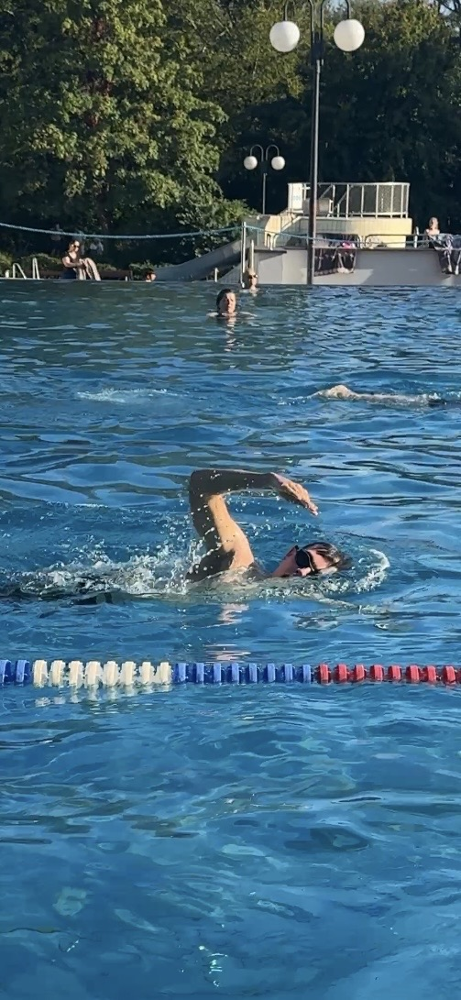
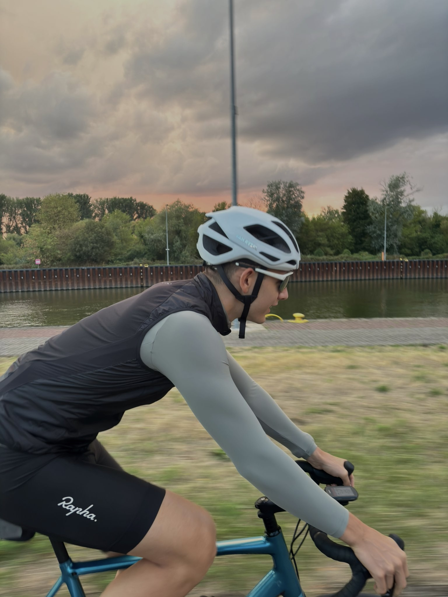
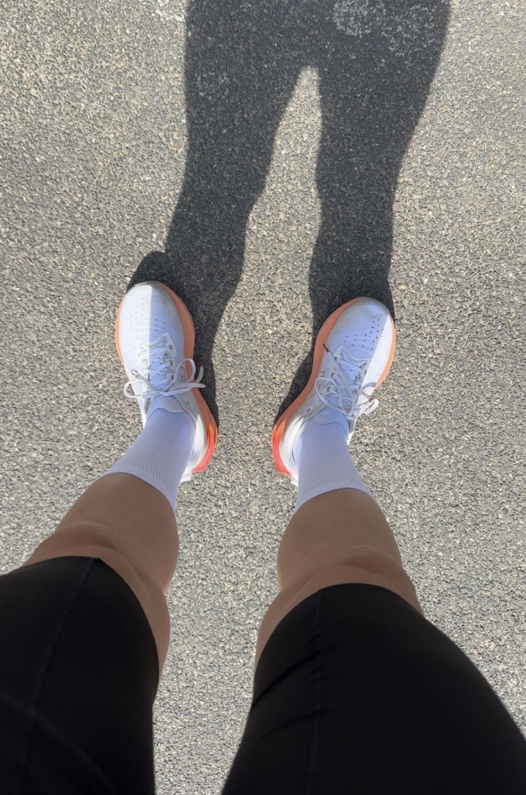

Sounds beim Laufen
Eigene Audioaufnahme während eines Lauftrainings.
DIE HERAUSFORDERUNG
Ein Ironman ist ein Triathlon über insgesamt etwa 226 Kilometer. Der Wettkampf besteht aus Schwimmen, Radfahren und Laufen. Zwischen den drei Disziplinen befinden sich zwei Wechselzonen.
SWIM · BIKE · RUN



MEIN TRAINING
Eigene Audioaufnahme während eines Lauftrainings.
INTERAKTIV
Starte die Simulation und verfolge den Rennfortschritt.
Bereit für den Start.
IRONMAN GUIDE
Weitere Informationen befinden sich in meinem selbst erstellten PDF-Dokument.
PDF herunterladen